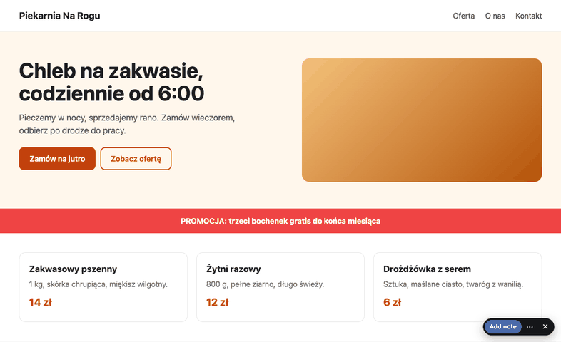
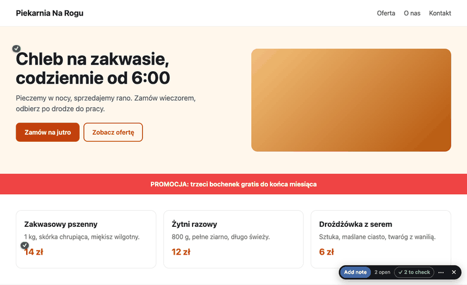

You have done the Discord ping-pong.
847 changes is also 847 rounds of "not that one, darker, drop the button", with a wait in between. This is the loop that graduated: mark everything on the live page, one pass for the agent, keep or revert each change where it happened.
A browser extension for your own eyes: it works on any site, the site needs nothing. A secret link for the client's eyes. A phone that points.
Mark everything. Then go to your meeting.
Click the thing, say it, next. No describing which button. No waiting for the answer before the next note.

One button. Click anything on the page and say what should change, or press Remove element.
The extension runs in your browser, so it works on every site you can open, screenshot included. Nothing to install on the site.
Point from the phone, type on the computer. Or a secret link for the client, no account, no install.
One pass for the agent.
Every note of the whole site arrives at once: page, selector, the element's HTML and text, the YAML source block, a screenshot. The agent fixes the batch and marks each note.
# the agent, once $ annot export bakery.test ## / (4) ### #63 CHANGE div.price "14 zł" ciemniej - source: pages/home.yaml › cards - shot: hub/data/shots/63.jpg ...
Review where it happened.
A fixed note does not vanish into a chat. It stays on the page as a green tick until you say Keep or Revert. Before and after, on the element.

The page dims, only what the agent changed stays lit. Step through with the arrows.
The change stays, the tick goes away. That is the approval, on the page, by the person who asked.
Say why if you want. The agent gets a REVERT with the patch to undo. No second guess, no new attempt.
Krug-level audit, same day.
Before anyone else saw it, the tool went through a Krug-level UX audit: the agent walked the live pages with the three questions from "Don't Make Me Think" (is it obvious what this is, what can I click, did I just do the right thing), wrote 18 friction points, and fixed all 18 the same afternoon. The same audit is available for your tool.
| Before | After |
|---|---|
| A pill with nine controls: Paused, Lead, Follow, Hide fixed, List, Export site... | Add note. The open count. The to-check count. A menu for the rest. |
Hover label: a:nth-of-type(3) 560×69 | Hover label: "price · 14 zł". The site's own words. |
| Card: breadcrumb, walk buttons and CSS selector above the question | Card: the question first. Nothing else to think about. Selector folded. |
| Green markers "✓35" with dashed boxes at stale positions over the header | A tick. The number on hover. No boxes where nothing is. |
| No hint for a first-time reviewer | "click anything on the page", in the pill, until the first note exists. |
Want this?
The extension for your own sites, an install into your team's agent loop, or a Krug-level audit of your tool. Say which, I write back.